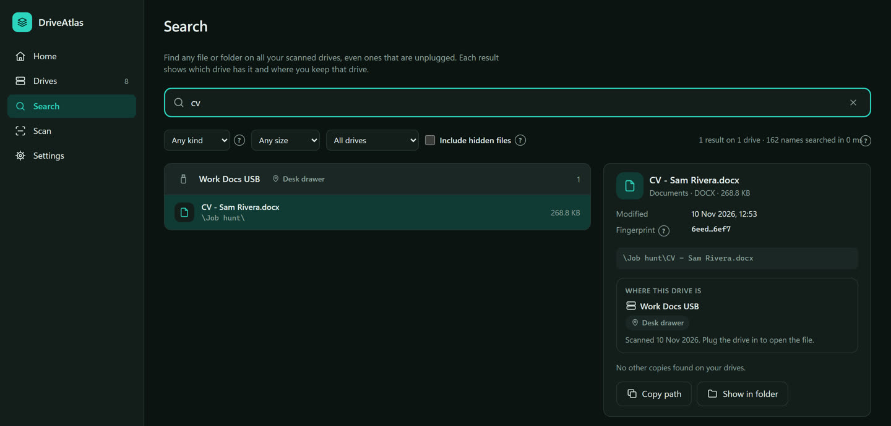
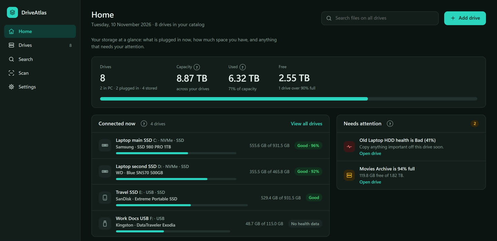
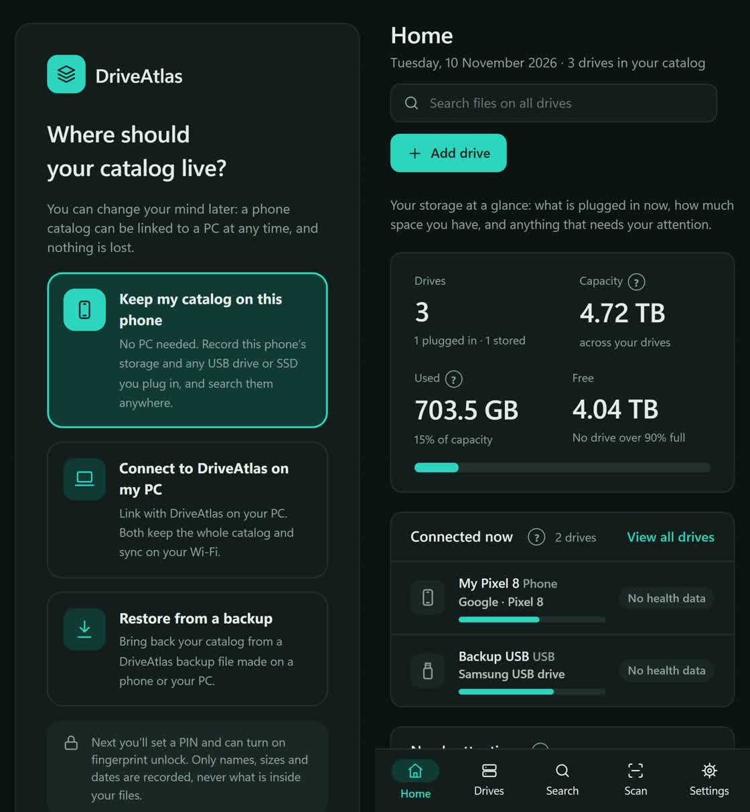

DriveAtlas keeps a private list of every drive you own and every file on it. Search them all at once, even the ones sitting in a drawer, and it tells you which drive has the file and where you keep that drive.
Free. Windows 10 or 11, and Android 7 or newer. No internet needed after you install it.
Save this guide as a PDF (5 pages, to read offline or send to a friend)

The problem
You need the photos from one trip, your CV, a wedding video or an old setup file. You know it's on one of your drives. So you plug them in one by one and dig through folders until you find it, or give up.
DriveAtlas fixes that. It remembers what is on every drive, like a ledger. You search once, it tells you which drive and which shelf, and you only plug in the right one.
Why DriveAtlas
How it works
Plug it in. DriveAtlas recognises it, fills in the brand and model, and you give it a name and the place you keep it.
DriveAtlas reads the name, size and date of every file and folder. After that it picks up new, renamed and deleted files by itself.
Type a word. You see the file, the folder it's in, the drive it's on and where that drive is kept, plugged in or not.
Features
Files and folders on all your drives, with filters for type, size and drive.
Name, place, brand and model, how full it is, and whether it's plugged in, in the PC or stored away.
Scan once. On your PC, changes on plugged-in drives show up within seconds, and a quick check catches up when a drive comes back.
Wear, temperature and errors for hard drives, SSDs and NVMe, with a warning while there's still time to copy your files.
Link once with a QR code. On the same home Wi-Fi they swap changes, so either one can search everything.
Record your phone's storage, its memory card, and USB drives or SSDs plugged in with an OTG adapter. No PC needed.
A password on the PC, a PIN or fingerprint on the phone. Everything stays on your own devices.
One backup file, locked with your password. Keep it on another drive or in your own cloud folder, and restore it on a new laptop or phone.
A small question mark next to every setting explains it in plain words.
What it looks like


Screens show example drives.
Get started
Start on whichever device you have. You can link the two later and nothing is lost.
DriveAtlas adds itself to the Start menu and shows an icon near the clock. Hover it for your drive count and space.
Then add drives and scan them, just like on the PC.
From now on both keep the whole list and swap changes whenever they're on the same Wi-Fi.
Open Search and type a word from the file name, like trip, cv or setup. The result shows the drive and where it's kept. Fetch that drive, plug it in, and choose Show in folder.
Questions
Install it on your PC or phone, create your account, add your drives and scan each one once. The steps are in Get started above. The first scan of a big drive can take a while, because DriveAtlas looks at every file once. After that, only changes are read.
YesAdd as many drives as you like. Your PC and your phone share one list once you link them, and keep it in sync on your home Wi-Fi. Linking other Windows PCs, so they can scan the drives plugged into them, is coming in a later update.
Not yetToday DriveAtlas lists physical storage: USB drives, cards, hard drives, SSDs, your phone and your PC. Cloud drives are planned, through a browser extension that keeps the same rule: your list stays on your devices. You can already keep your DriveAtlas backup file in your cloud folder.
On the PC, yes: it runs quietly with an icon near the clock, notices drives you plug in, keeps their file lists up to date and makes daily backups if you turn them on. Right-click the icon to exit. On the phone it works while the app is open, and catches up with any changes when you open it.
No. DriveAtlas has no cloud and no account server. It records file names, folders, sizes and dates, never what's inside your files. Your phone and PC talk only over your own Wi-Fi, encrypted.
Only to download DriveAtlas. Everything else works offline, including searching and syncing on your home Wi-Fi.
You can still search it. That's the point: DriveAtlas tells you which drive has the file and where you keep it, so you only fetch that one.
USB sticks, SD and microSD cards, external and internal hard drives, SSDs, NVMe drives, your phone's storage and your PC's drives. CDs, DVDs and other media can be added to the list by hand.
No. It's small, and after the first scan it reacts only to files that change. When nothing changes it does almost nothing.
Yes, for now. DriveAtlas isn't code-signed or on the Play Store yet. On Windows, if SmartScreen says "Windows protected your PC", choose More info, then Run anyway. Windows 11's Smart App Control can block apps that aren't signed yet; signing is planned. On Android, allow Install unknown apps for the file once.
Make a backup in Settings. Restore that one file on the new device and your whole list comes back, drives, places and file lists included.
It's free while in beta. If you try it, your feedback shapes what comes next.
One link for both apps. It picks the right download for your device.
sulman-ahmad.github.io/DriveAtlas
On your PC? Scan the code with your phone to get the Android app.